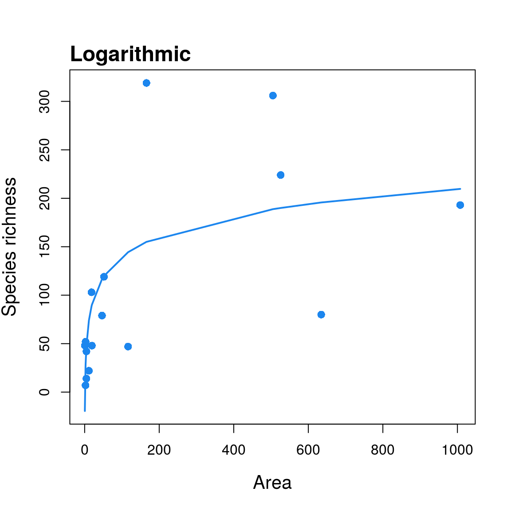
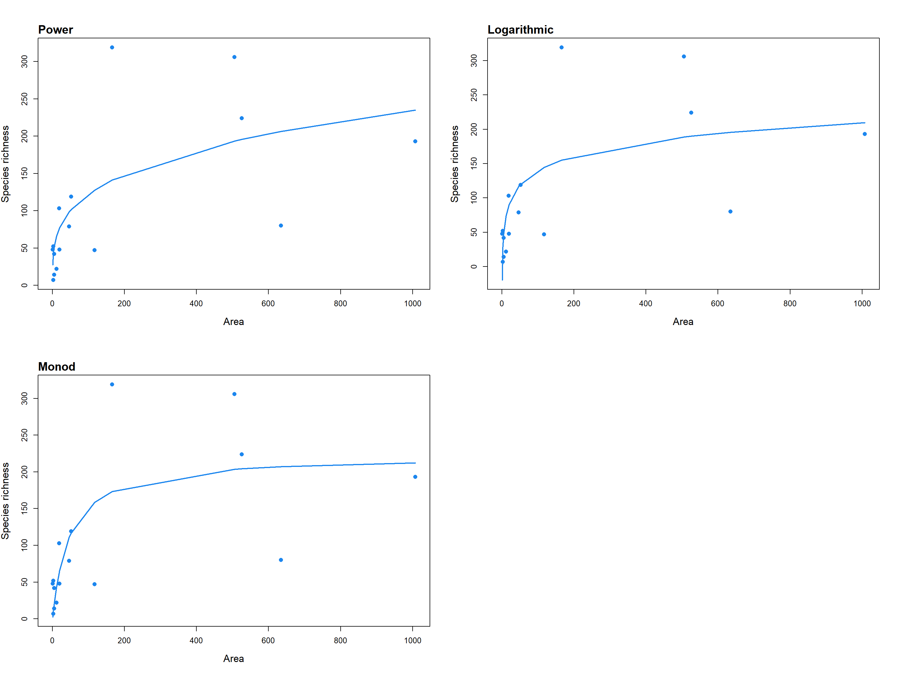
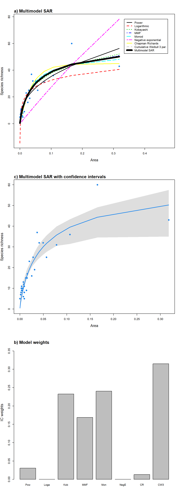
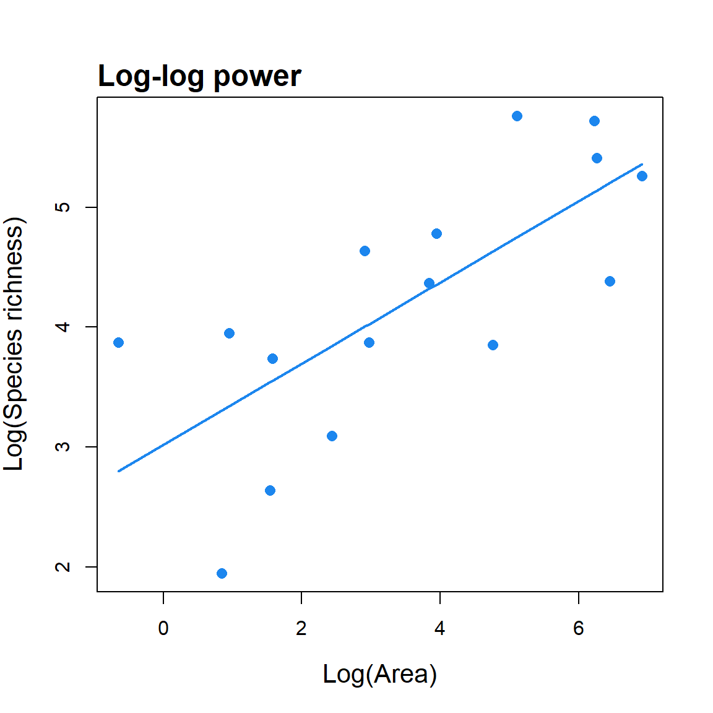

sars R Package
Thomas J. Matthews and Francois Guilhaumon
Source:vignettes/sars-r-package.Rmd
sars-r-package.RmdThis vignette is heavily based on the paper that accompanies the package.To cite this vignette, please cite the corresponding paper:
Matthews, T.J., Triantis, K., Whittaker, R.J. and Guilhaumon, F. (2019) sars: an R package for fitting, evaluating and comparing species–area relationship models. Ecography, In press
Version 1.1.1 of the package, presented in this vignette, has been archived on the Zenodo research data repository (DOI: 10.5281/zenodo.2573067).
BACKGROUND
The species–area relationship (SAR) describes the near universally observed pattern whereby the number of species increases with the area sampled, and it has been described as one of ecology’s few laws (Rosenzweig (1995)). The SAR is a fundamental component of numerous ecological and biogeographical theories, such as the equilibrium theory of island biogeography (MacArthur and Wilson (1967)). In addition, SAR models have been widely used in applied ecology and conservation biogeography: for example, to predict the number of extinctions due to habitat loss. Numerous types of SAR have been described, and one primary dichotomy employed is the split of SARs into island SARs (ISARs), whereby each data point is an individual island or isolated sample, and species accumulation curves (SACs) that represent cumulative counts of increased species number with sampling area (Gray, Ugland, and Lambshead (2004)). Whilst the remainder of the paper and the described R package are focused on ISARs, the models and the model fitting procedure can equally be applied to SACs (see Matthews, Triantis, et al. (2016)), although it should be noted that in SACs the data points are not independent of one another.
Over 20 SAR models have been described in the literature (Dengler (2009), Tjørve (2003), Tjørve (2009), Triantis, Guilhaumon, and Whittaker (2012)). However, despite this wide range of models, the majority of SAR studies are still based exclusively on the power model (Arrhenius (1921)), which if fitted in its non-linear (untransformed) form generally takes a convex form. Often, the log–log representation of the power model is used as it can be fitted using standard linear regression, and its parameters are more easily interpretable (Rosenzweig (1995)). However, whilst the power model has been found to provide a reasonable fit to a wide range of datasets (Dengler (2009), Matthews, Guilhaumon, et al. (2016)), it is not universally the best model, and a number of studies have reported other models to provide better fits to empirical data (e.g. Triantis, Guilhaumon, and Whittaker (2012), Matthews, Guilhaumon, et al. (2016)). The possibility of scale dependency of the form of the SAR has long been of interest, with, for example, a theoretical case being made for SARs at intermediate spatial scales being approximated by a power model, whilst at larger spatial scales the form of the SAR has been theorised to be sigmoidal. Additionally, it is only recently that the SAR for archipelagos as units of analysis and not just islands has started to be studied, and thus we know little about the form of archipelago SARs.
Due to the increased recognition of model uncertainty in SAR research, a number of recent studies have employed a multi-model inference approach (Burnham and Anderson (2002)) in the analysis of SARs, whereby either (1) multiple SAR models are compared using various criteria (e.g. AIC) and a best model is chosen (e.g. Dengler (2009)), or (2) multiple SAR models are fitted and a multi-model averaged curve is calculated using, for example, AIC weights (e.g. Guilhaumon et al. (2008)). We are not aware of any published software package that enables users to fit, and create multi-model averaged curves using more than eight SAR models. Considering currently available software, the BAT R package provides functions to fit three SAR models (linear, power and logarithmic); however, this package is focused on general biodiversity assessment and thus does not provide any additional SAR functionality. The mmSAR R package (Guilhaumon, Mouillot, and Gimenez (2010)) is focused on SARs and while it allows users to fit eight SAR models using an information theoretic framework, it does not include several models that have been found to provide the best fits to several empirical datasets. To provide a set of tools to fill these gaps, we have developed the R package ‘sars’. The package provides functions to fit 20 SAR models using non-linear and linear regression, calculate multi-model averaged curves using various information criteria, and generate confidence intervals using bootstrapping. Novel features compared with mmSAR include (i) user-friendly functions for plotting (the user can now plot weighted multimodel SAR curves along with the individual SAR model curves) and (ii) determining the observed shape of the model fit (i.e. linear, convex up, convex down or sigmoidal) and (iii) presence or not of an asymptote, and (iv) functions to fit, plot and evaluate
Coleman (1981)’s random placement model using a species-site abundance matrix, and (v) to fit the general dynamic model (GDM) of island biogeography (Whittaker, Triantis, and Ladle (2008)). In addition, the mmSAR package (which has been deprecated) no longer complies with recognised programming good practice , is not on CRAN (the main repository of R packages), and is not user friendly (e.g. it requires the user to load individual models prior to fitting). There was therefore a need to design a new package from scratch.
##METHODS AND FEATURES The ‘sars’ (species–area relationships) package has been programmed using standard S3 methods and is available on CRAN (version 1.1.0) and the development version on GitHub (txm676/sars), meaning researchers can easily add in their own models and functions and integrate these into the multi-model inference framework. Thus, the package represents a resource for future SAR work that can be built on and expanded by workers in the field.
Fitting individual SAR models and a set of SAR models The package provides functions to fit each of the 20 SAR models (see also Triantis, Guilhaumon, and Whittaker (2012)). The ‘sar_models’ function can be used to bring up a list of the 20 model names and a Table can be generated in the package using the ‘display_sars_models’ function. With the exception of the linear model (which is fitted using standard linear regression), all models are fitted using non-linear regression and the model parameters are estimated by minimizing the residual sum of squares with an unconstrained Nelder-Mead optimization algorithm and the ‘optim’ R function. The starting values for the parameter estimates are carefully chosen to avoid numerical problems and to speed up the convergence process. However, custom starting values can be provided for any of the 20 models using the ‘start’ argument in the model fit functions.
Each individual model fit returns an object of class ‘sars’, which is a list of 22 elements containing relevant model fit information, such as the model parameter estimates, the fitted values, the residuals, model fit statistics (e.g. AIC, R2), the observed model shape (linear, convex or sigmoidal), whether or not the fit is asymptotic, and convergence information. The returned object can easily be plotted using the ‘plot.sars’ generic function; as this function is based on the base R plotting framework, the plot aesthetics can be edited using standard plotting arguments (see the ‘plot.sars’ documentation in the package). Summary and print generic functions are also provided for class ‘sars’; these functions follow the output of the standard ‘lm’ function in the ‘stats’ R package. Multiple SAR models can be fitted to the same dataset using the ‘sar_multi’ function and the resultant n model fit objects stored together as a ‘fit_collection’ object. This object is a list of class ‘sars’, where each of the n elements contains an individual SAR model fit. Using the ‘plot.sars’ generic function on a ‘fit_collection’ object generates a grid of the n individual model fit plots (Fig. 1).
#load an example dataset (Preston, 1962), fit the logarithmic SAR model,
#return a model fit summary and plot the model fit. data(galap)
fit <- sar_loga(data = galap)
summary(fit)##
## Model:
## Logarithmic
##
## Call:
## S == c + z * log(A)
##
## Did the model converge: TRUE
##
## Residuals:
## 0% 25% 50% 75% 100%
## -164.000 -25.675 11.350 38.725 115.700
##
## Parameters:
## Estimate Std. Error t value Pr(>|t|) 2.5% 97.5%
## c 0.2915341 34.5985767 0.0084262 0.9933958 -68.9056193 69.489
## z 30.2802630 8.3203931 3.6392827 0.0026812 13.6394768 46.921
##
## R-squared: 0.49, Adjusted R-squared: 0.41
## AIC: 141.78, AICc: 143.78, BIC: 144.1
## Observed shape: convex up, Asymptote: FALSE
##
##
## Warning: The fitted values of the model contain negative values (i.e. negative species richness values)plot(fit)
#Create a fit_collection object containing multiple SAR model fits, and
#plot all fits.
fitC <- sar_multi(data = galap, obj = c("power", "loga", "monod"))##
## Now attempting to fit the 3 SAR models:
##
## ── multi_sars ────────────────────────────────────────────── multi-model SAR ──
## → power : ✔
## → loga : ✔
## → monod : ✔plot(fitC) #see Fig.1
Model fit validation Model fits can be evaluated through tests of the normality and homoscedasticity of the residuals. Any of three tests can be selected to test the normality of the residuals: 1) the Lilliefors extension of the Kolmogorov normality test (the default; normaTest = “lillie”), 2) the Shapiro-Wilk test of normality (to be preferred when sample size is small; “shapiro”), and 3) the Kolmogorov-Smirnov test (“kolmo”). Alternatively, an option to omit a residuals normality test is provided (“none”). Three options are provided to check for the homogeneity of the residuals: 1) a correlation of the residuals with the model fitted values (the default; “cor.fitted”), 2) a correlation of the residuals with the area values (“cor.area”), or 3) no homogeneity test (“none”). If a test is selected and is significant at the 5% level a warning is provided in the model summary; alternatively, the full results of the three tests can be accessed in the model fit output. A third model validation check for negative predicted richness values (i.e. when at least one of the fitted values is negative) is automatically undertaken and a warning is provided in the model summary if negative values are predicted.
#load an example dataset, fit the linear SAR model whilst running residual
#normality and homogeneity tests, and return the results of the residual
#normality test
data(galap)
fit <- sar_linear(data = galap, normaTest ="lillie", homoTest = "cor.fitted")
summary(fit) #a warning is provided indicating the normality test failed##
## Model:
## Linear model
##
## Call:
## S == c + m*A
##
## Did the model converge: TRUE
##
## Residuals:
## 0% 25% 50% 75% 100%
## -107.90 -52.10 -24.15 31.75 218.00
##
## Parameters:
## Estimate Std. Error t value Pr(>|t|) 2.5 % 97.5 %
## c 70.314003 25.743130 2.731370 0.016228 15.100481 125.5275
## m 0.185382 0.072884 2.543504 0.023410 0.029060 0.3417
##
## R-squared: 0.32, Adjusted R-squared: 0.21
## AIC: 146.36, AICc: 148.36, BIC: 148.68
## Observed shape: linear, Asymptote: FALSE
##
##
## Warning: The normality test selected indicated the model residuals are not normally distributed (i.e. P < 0.05)## $test
## [1] "lillie"
##
## [[2]]
##
## Lilliefors (Kolmogorov-Smirnov) normality test
##
## data: res
## D = 0.2146, p-value = 0.04725Observed model shape and identifying an asymptote Whilst each of the 20 models has a general shape (Triantis, Guilhaumon, and Whittaker (2012)), the actual observed shape of the model fit can be different, for some models, depending on the parameter estimates. This is important as the shape of the curve has significant implications for conservation applications and the testing of macroecological theory (Rosenzweig (1995)). In ‘sars’, the observed shape of a model fit is determined using the sequential algorithm outlined in Triantis, Guilhaumon, and Whittaker (2012). The shape is calculated using the model fit within the observed range of area values. Briefly, the algorithm works by first determining whether the fit is a straight line. Then, if the fit is classified as not being linear, the observed shape is classified as either convex or sigmoidal by analysis of the second derivative (with respect to area) of the model fit (the full algorithm is detailed in Triantis, Guilhaumon, and Whittaker (2012), p. 220). There has also been considerable debate in the SAR literature as to whether or not the SAR is asymptotic. In the ‘sars’ package, to determine whether a fit is asymptotic, for the relevant models the fitted model parameters are analysed to check whether the estimated asymptote is within the range of the sample data (Triantis, Guilhaumon, and Whittaker (2012)).
Multimodel SAR curve As well as fitting individual models, the package provides a function (‘sar_average’) to fit up to 20 models, compare the resultant fits using information criteria, and construct a multimodel-averaged SAR curve based on information criteria weight (see Guilhaumon, Mouillot, and Gimenez (2010)). The multimodel average curve is constructed as a linear combination of individual model fits by multiplying the predicted richness values of each of the successfully fitted models by the model’s information criterion weight, and then summing the resultant values across all models (Burnham and Anderson (2002)). Three information criteria are available in the package: AIC, AICc and BIC. Confidence intervals around the multimodel averaged curve can be calculated using a non-parametric bootstrap algorithm described in Guilhaumon, Mouillot, and Gimenez (2010). Briefly, each of the SAR models used in the ‘sar_average’ function is fitted to the data, and the fitted values and residuals stored. The residuals are then transformed using the approach in Davison and Hinkley (1997) (p.259). For each bootstrap sample, an individual model fit is selected with the probability of selection being equal to that model’s information criterion weight. The transformed residuals from this fit are then sampled with replacement and added to the model’s fitted richness values. The ‘sar_average’ function is then used to fit all candidate SAR models to this bootstrapped set of response values, and the multimodel averaged fitted values stored. Percentile confidence intervals are then calculated using all bootstrapped fitted values.
The ‘sar_average’ function can be used without specifying any models, in which case the package attempts to fit each of the 20 models in Table 1; alternatively, a vector of model names or a ‘fit_collection’ object (generated using the ‘sar_multi’ function) can be provided using the ‘obj’ argument. The three model validation tests listed above (normality and homogeneity of residuals, and negative predicted values) can be selected; if any model fails one or more of the tests during the fitting process it is removed from the resultant multimodel SAR curve. The output of the ‘sar_average’ function is a list of class ‘multi’ and class ‘sars’, with two elements. The first element (‘mmi’) contains the multi model inference (fitted values of the multimodel SAR curve), and the second element (‘details’) contains a range of information regarding the fitting process, including the successfully fitted models, the models removed due to failing any of the validation tests, and the information criterion values, delta values and weights for the successfully fitted models. The returned object can easily be plotted using the ‘plot.multi’ generic function, and multiple plot options are available (using the ‘type’ argument; see Fig. 2). The fits of all the successfully fitted models and the multimodel SAR curve (with or without confidence intervals) can be plotted together (‘type’ = “multi”), and a barplot of the information criterion weights of each model can also be produced (‘type’ = “bar”).
#load an example dataset (Niering, 1963), run the ‘sar_average’ function
#using a vector of model names and with no model validation tests, and
#produce the plots in Figure 2 of the paper
data(niering)
#run the ‘sar_average’ function using a vector of model names
fit <- sar_average(data= niering, obj =c("power","loga","koba","mmf","monod",
"negexpo","chapman","weibull3","asymp"),
normaTest = "none", homoTest = "none", neg_check = FALSE, confInt = TRUE, ciN
= 50, verb = FALSE) #a message is provided indicating that one model (asymp) could not be##
## 1 models could not be fitted and have been excluded from the multi SAR##
## Calculating sar_multi confidence intervals - this may take some time:#fitted
par(mfrow = c(3,1)) #plot all model fits with the multimodel SAR curve
plot(fit, ModTitle = "a) Multimodel SAR")
#plot the multimodel SAR curve (with confidence intervals; see explanation
#in the main text, above) on its own
plot(fit, allCurves = FALSE, ModTitle =
"c) Multimodel SAR with confidence intervals", confInt = TRUE)
#Barplot of the information criterion weights of each model
plot(fit, type = "bar", ModTitle = "b) Model weights", cex.lab = 1.3)
##Additional functions In addition to the main functions used to fit and compare the 20 SAR models, the sars package provides additional functions for specific SAR-based analyses. First, a function is provided to fit the log–log version of the power model (a function that is often fitted in SAR studies; Rosenzweig 1995) and compare parameter values with those generated using the non-linear power model. The log–log version of the power model is not equivalent to its non-linear counterpart because of non-equivalence in the study of the variation in a variable and in its transformation, and bias of back-transformed results obtained on a logarithmic scale. Second, a function has been added that enables the fitting of Coleman (1981)’s random placement model to a species/sites abundance matrix. According to this model, the number of species occurring on an island depends on the relative area of the island and the regional relative species abundances. The fit of the random placement model can be determined through use of a diagnostic plot (which can be generated from the function output) of island area (log transformed) against species richness, alongside the model’s predicted values (see Wang et al. (2010)). Following Wang et al. (2010), the model is rejected if more than a third of the observed data points fall beyond one standard deviation from the expected curve. Finally, a function is provided to fit the general dynamic model of island biogeography (Whittaker, Triantis, and Ladle (2008)) using three different SAR models (linear, logarithmic and power).
#load an example dataset, fit the log-log power model, return a model fit
#summary and plot the model fit. When ‘compare’ == TRUE, the non-linear
#power model is also fitted and the resultant parameter values compared.
#If any islands have zero species, a constant (‘con’) is added to all
#species richness values.
data(galap)
fit <- lin_pow(dat = galap, compare = TRUE, con = 1)
summary(fit)## Model = Log-log power
##
## Call:
## lm(formula = S ~ A, data = log.data)
##
## Residuals:
## Min 1Q Median 3Q Max
## -1.3591 -0.7584 0.1177 0.6009 1.0739
##
## Coefficients:
## Estimate Std. Error t value Pr(>|t|)
## LogC 3.01865 0.35442 8.517 6.56e-07 ***
## z 0.33854 0.08523 3.972 0.00139 **
## ---
## Signif. codes: 0 '***' 0.001 '**' 0.01 '*' 0.05 '.' 0.1 ' ' 1
##
## Residual standard error: 0.7626 on 14 degrees of freedom
## Multiple R-squared: 0.5298, Adjusted R-squared: 0.4962
## F-statistic: 15.78 on 1 and 14 DF, p-value: 0.001391
##
## Power (non-linear) parameters:
## c = 33.18
## z = 0.28plot(fit)
#load an example dataset, fit the random placement model and plot the
#model fit and standard deviation. The ‘data’ argument requires a species-
#site abundance matrix: rows are species and columns are sites. The area
#argument requires a vector of site (island) area values.
data(cole_sim)
fit <- coleman(data = cole_sim[[1]], area = cole_sim[[2]])
plot(fit, ModTitle = "Hetfield")
#load an example dataset, fit the GDM using the logarithmic SAR model, and
#compare the GDM with three alternative (nested) models: area and time
#(age of each island), area only, and intercept only.
data(galap)
galap$t <- rgamma(16, 5, scale = 2)#add a random time variable
gdm(data = galap, model = "loga", mod_sel = TRUE)##
## GDM fit using the logarithmic SAR model
##
## GDM model summary:
##
## Nonlinear regression model
## model: SR ~ Int + A * log(Area) + Ti * Time + Ti2 * Time^2
## data: data
## Int A Ti Ti2
## -91.27756 36.15122 6.86805 0.01868
## residual sum-of-squares: 69285
##
## Number of iterations to convergence: 1
## Achieved convergence tolerance: 5.883e-07
##
## All model summaries:
##
## RSE AIC Delta.AIC
## A 74.44350 187.1908 0.0000000
## A + T 73.00542 187.3809 0.1900555
## GDM 75.98519 189.3804 2.1895260
## Intercept 100.32744 195.8435 8.6526478##CONCLUSIONS The SAR has been a cornerstone of ecological and biogeographical science for almost a century and its form and fit are still of great significance in both theoretical and applied contexts. The development of the ‘sars’ R package should aid future SAR research by providing a comprehensive set of tools that enable in-depth exploration of SARs and SAR-related patterns. In addition, the package has been designed in such a way as to allow other SAR researchers to add (e.g. via GitHub) new functions and models in the future to ensure the package is of lasting value. For example, future additions to the package could include the suite of countryside biogeography SAR models that have recently been published, standard SAR functions not so far incorporated, or functions specifically intended for analysis of species accumulation curves or endemics–area relationships. Finally, whilst the focus of this paper has been on classic SARs, there is no reason that the functionality in the ‘sars’ package cannot be used to analyse other diversity–area relationships (e.g. functional or phylogenetic diversity–area relationships). Application of the full set of 20 models, in addition to the multimodel SAR framework, included in the ‘sars’ package to a wider range and type of data (e.g. trait and phylogenetic data) will likely be revealing and will help in improving our understanding of SARs, and diversity–area relationships more generally.
References
Arrhenius, Olof. 1921. “Species and Area.” The Journal of Ecology 9 (1): 95. https://doi.org/10.2307/2255763.
Burnham, K. P., and D. R Anderson. 2002. Model Selection and Multi-Model Inference: A Practical Information-Theoretic Approach. Book. 2nd ed. New-York: Springer.
Coleman, Bernard D. 1981. “On Random Placement and Species-Area Relations.” Journal Article. Mathematical Biosciences 54 (3–4): 191–215. https://doi.org/http://dx.doi.org/10.1016/0025-5564(81)90086-9.
Davison, A. C., and D. V. Hinkley. 1997. Bootstrap Methods and Their Application. Book. Cambridge: Cambridge University Press.
Dengler, Jürgen. 2009. “Which Function Describes the Species–Area Relationship Best? A Review and Empirical Evaluation.” Journal Article. Journal of Biogeography 36 (4): 728–44. https://doi.org/10.1111/j.1365-2699.2008.02038.x.
Gray, John S., Karl I. Ugland, and John Lambshead. 2004. “On Species Accumulation and Species–Area Curves.” Journal Article. Global Ecology and Biogeography 13 (6): 567–68. https://doi.org/10.1111/j.1466-822X.2004.00138.x.
Guilhaumon, François, Olivier Gimenez, Kevin J. Gaston, and David Mouillot. 2008. “Taxonomic and Regional Uncertainty in Species-Area Relationships and the Identification of Richness Hotspots.” Journal Article. Proceedings of the National Academy of Sciences USA 105 (40): 15458–63. https://doi.org/10.1073/pnas.0803610105.
Guilhaumon, François, David Mouillot, and Olivier Gimenez. 2010. “MmSAR: An R-Package for Multimodel Species–Area Relationship Inference.” Journal Article. Ecography 33 (2): 420–24. https://doi.org/10.1111/j.1600-0587.2010.06304.x.
MacArthur, R. H, and E. O Wilson. 1967. The Theory of Island Biogeography. Book. Princeton: Princeton University Press.
Matthews, Thomas J., François Guilhaumon, Kostas A. Triantis, Michael K. Borregaard, and Robert J. Whittaker. 2016. “On the Form of Species–Area Relationships in Habitat Islands and True Islands.” Journal Article. Global Ecology and Biogeography 25: 847–58. https://doi.org/10.1111/geb.12269.
Matthews, Thomas J., Kostas A. Triantis, François Rigal, Michael K. Borregaard, François Guilhaumon, and Robert J. Whittaker. 2016. “Island Species–Area Relationships and Species Accumulation Curves Are Not Equivalent: An Analysis of Habitat Island Datasets.” Journal Article. Global Ecology and Biogeography 25 (5): 607–18. https://doi.org/10.1111/geb.12439.
Rosenzweig, M. L. 1995. Species Diversity in Space and Time. Book. Cambridge: Cambridge University Press.
Tjørve, Even. 2003. “Shapes and functions of species-area curves: a review of possible models.” Journal of Biogeography 30 (6): 827–35. http://doi.wiley.com/10.1046/j.1365-2699.2003.00877.x.
———. 2009. “Shapes and functions of species-area curves (II): a review of new models and parameterizations.” Journal of Biogeography 36 (8): 1435–45. https://doi.org/10.1111/j.1365-2699.2009.02101.x.
Triantis, Kostas A., François Guilhaumon, and Robert J. Whittaker. 2012. “The Island Species–Area Relationship: Biology and Statistics.” Journal Article. Journal of Biogeography 39 (2): 215–31. https://doi.org/10.1111/j.1365-2699.2011.02652.x.
Wang, Yanping, Yixin Bao, Mingjian Yu, Gaofu Xu, and Ping Ding. 2010. “Nestedness for Different Reasons: The Distributions of Birds, Lizards and Small Mammals on Islands of an Inundated Lake.” Journal Article. Diversity and Distributions 16 (5): 862–73. https://doi.org/10.1111/j.1472-4642.2010.00682.x.
Whittaker, R. J, K. A Triantis, and R. J Ladle. 2008. “A General Dynamic Theory of Oceanic Island Biogeography.” Journal Article. Journal of Biogeography 35 (6): 977–94.